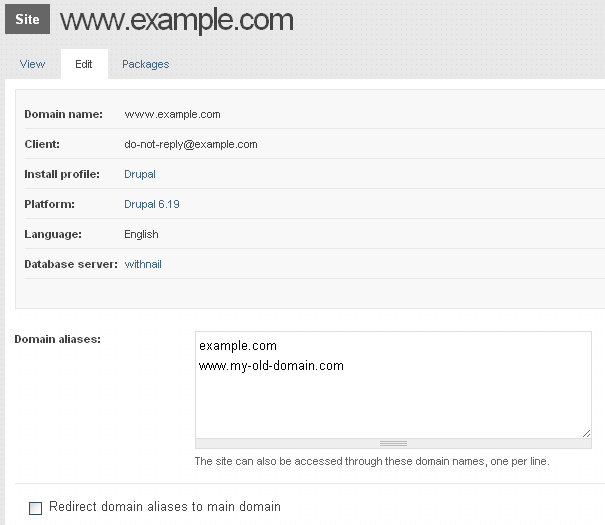
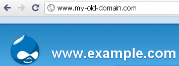

Site URL aliases
Site aliases are helpful if you move content to a new domain, change domain names or simply want to make sure that http://example.com and http://www.example.com take users to the same place. You can implement site aliases with or without redirection. The differences between these two methods and how Aegir handles them is described below.
Enable alias support in Aegir
You have to enable alias support in Aegir as it is off by default.
- Browse to
/admin/hosting/features
- Check the Site aliasing box

- Click Save configuration
Global alias settings
After you have enabled the site aliasing feature in Aegir you can navigate to aegir.example.com/admin/hosting/aliases (see the menu item that is added under Hosting in the admin menu bar). Here you can set default site alias settings for all of your Aegir-hosted sites.

Site-specific alias settings
You can override the global settings for aliasing by configuring site-specific alias settings either when you create the site or later by editing the site settings.

Redirection Option
For users, one of the main differences that occurs when redirection is turned on is that the URL that they enter in the browser address bar changes. This reflects what the server is doing, which is in effect to redirect the request to the same site under the main URL, as opposed to serving the same site from under an alias.
User navigates to my-old-domain.com with redirection off

User navigates to my-old-domain.com with redirection on

Aegir alias management under the hood
Aegir primarily manages aliases in the virtual hosts file for each site (e.g. /var/aegir/config/server_master/apache/vhost.d/www.example.com)
When Aliases are in use, the virtual hosts file will have a ServerAlias directive for each site alias:
ServerAlias example.com
ServerAlias www.my-old-domain.com
In addition to the above directives, when redirection is off, Aegir creates a symlink in the platform/sites/ folder for each alias that points to the folder associated with the primary domain:
lrwxrwxrwx 1 aegir aegir 15 Oct 31 23:25 example.com -> www.example.com
drwxr-xr-x 7 aegir aegir 4096 Oct 31 23:02 www.example.com
lrwxrwxrwx 1 aegir aegir 15 Oct 31 23:25 www.my-old-domain.com -> www.example.com
When redirection is enabled, Rewrite directives are added to the virtualhost to send http requests to the primary domain that the aliases are associated with:
ServerAlias example.com
ServerAlias www.my-old-domain.com
RewriteEngine on
RewriteCond %{HTTP_HOST} !^www.example.com$ [NC]
RewriteRule ^/(.)$ http://www.example.com/$1 [L,R=301]
The symlinks are not required in this case.